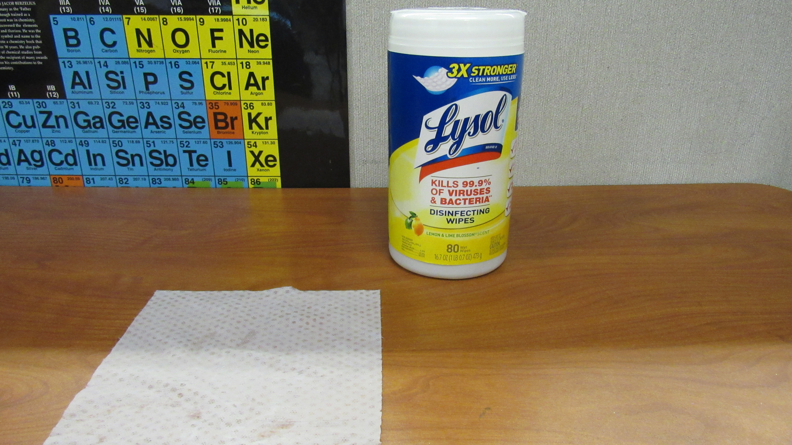
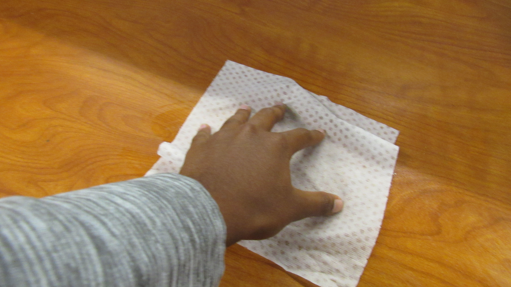
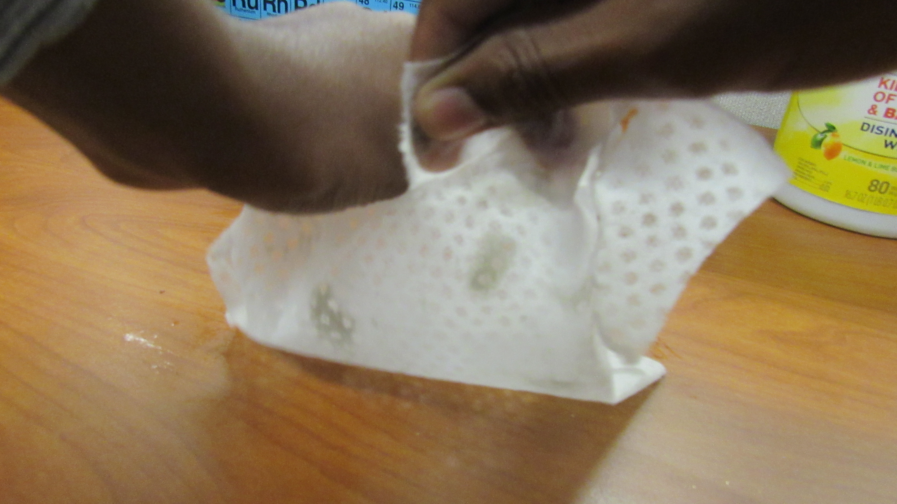
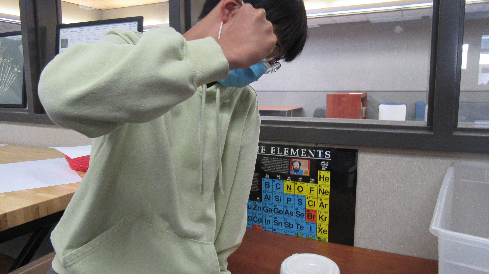
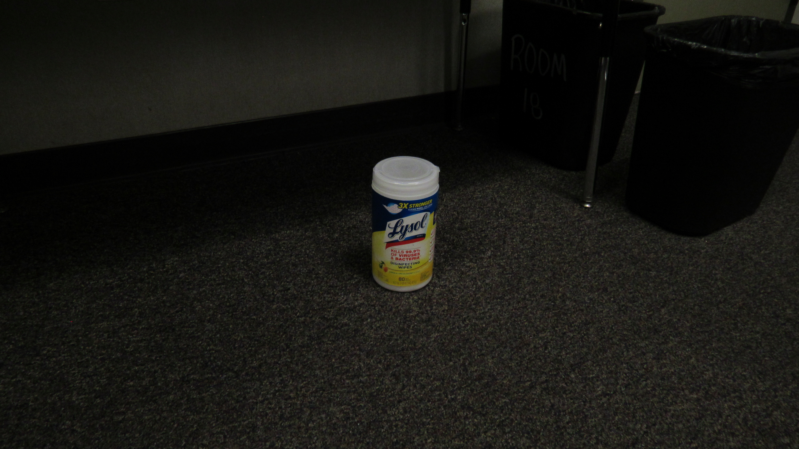
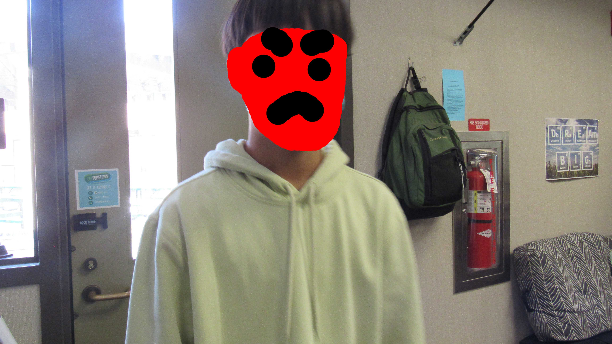
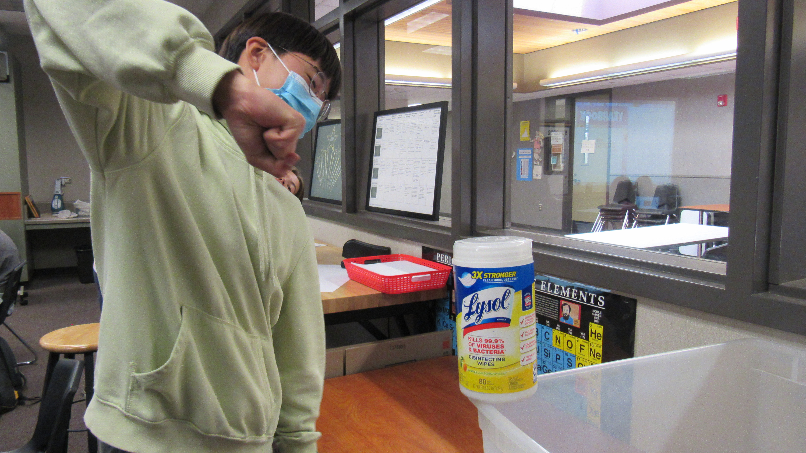
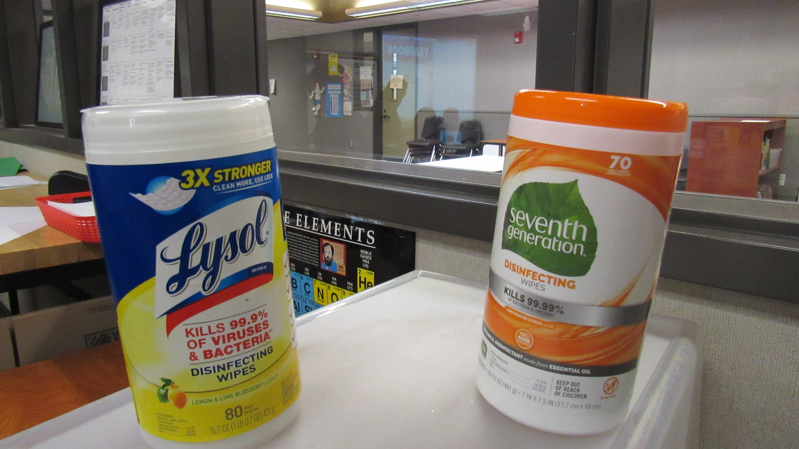

This is Larry the Lysol wipes bottle. He is used for cleaning in Classroom 18. He is very fond of his yellow and blue striped outer shell and has starred in many assignments.

This is what he has inside him. The white rectangle is a Lysol wipe. It is used for the cleansing of desks inside of the classroom.

Here is a student wiping down a table. All the dirt on the table gets caught on the wipe and is thrown away. All of the above steps are the best case scenario.

Sometimes bad students think it is funny to waste Lysol wipes by ripping them into shreds. This makes Larry very sad as it his life mission to clean the classroom and not to make a more mess.

Unfortunately for Larry, there was an evil troublemaker in the classroom and his name was Egg Kim. His favorite hobby was abusing Lysol and making Larry very depressed.

One day Egg was particularly angry. He decided that he would take it out on little Larry. Larry was so frightened when Egg entered the room that he decided to hide under his desk.

He had to make sure that Egg did not find him. As Egg approached, Larry just got more and more nervous. As Egg took each monstrous footstep, Larry saw his life flash before his eyes.

This was bad news for Larry. Egg found were Larry was hiding. Egg grasped for Larry, picked him up and was about to give the punch that would have ended the being of Larry...

Larry's buddy Seventh Generation, jumped out of nowhere stopping the puch in its tracks. Since Sebastion the Seventh Generation wipes bottle was much younger, he was not injured at all. Egg jumped back screamed in pain then collapsed to the ground in a mess of yellow, slimy, rotten, yolk.

After that it was all smiles for Larry and Sebastion. They both happily cleaned hte classroom from that point on until they ran out of wipes and entered the heavenly land called 'the landfill'.